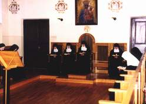
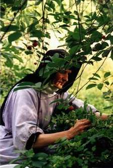
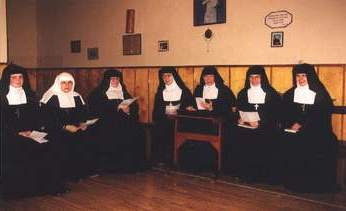

Celem sióstr Zakonu Nawiedzenia Najświętszej Maryi Panny jest "dążenie do zjednoczenia z Bogiem, aby modlitwą i świadectwem życia wspomagać Kościół św. w boskim dziele zbawiania świata."
Duchowość Zakonu Nawiedzenia to życie według :
- ducha, który szuka wyłącznie Boga i nieustannie zdąża do zjednoczenia z Nim
- ducha głębokiej pokory względem Boga i wielkiej łagodności względem bliźniego
- ducha, który nie podkreśla umartwień zewnętrznych, lecz skupia się na wyrzeczeniu i doskonałości wewnętrznej
- ducha prostoty i radości w życiu wspólnym
Siostry starają się żyć duchowością Nawiedzenia przez codzienne praktykowanie:
- modlitwy
- miłości i całkowitego oddania się Bogu
- cichości i pokory
- wypełnianie woli Bożej
- pracy
- radości we wspólnocie
Modlitwa
Siostry Wizytki z racji swego powołania są wezwane do życia kontemplacyjnego; modlitwa jest ośrodkiem ich życia. Umieszczone przez świętego założyciela, Franciszka Salezego w Tajemnicy Nawiedzenia kształtują swoją duchowość kontemplacyjną na wzór Maryi, która zjednoczona z Bogiem uwielbia Go całym swoim życiem i z radością ukazuje światu miłość Zbawiciela.
Św. Franciszek Salezy, wybitny teolog i asceta, czerpiąc natchnienie z Ewangelii pragnął dać Bogu i Kościołowi córki modlitwy, dusze wewnętrzne, tak zjednoczone z Chrystusem całym swoim życiem, aby przez codzienną ofiarę niosły duchową pomoc cierpiącemu i uwikłanemu w grzech światu. Z osobistej świętości wypływa ukryte apostolstwo sióstr.
Z pomocą łaski Bożej, ze swego ukrycia w klauzurze oddziaływują na innych dzięki tajemnicy jedności Mistycznego Ciała Chrystusa.

Modlitwa wprowadza w żywy kontakt z Bogiem, od przebudzenia rano aż do zaśnięcia wieczorem. Siostry modlą się indywidualnie i wspólnie.
Codziennie odprawiają godzinę medytacji rano i pół godziny wieczorem. Św. Matka de Chantal, która z własnego doświadczenia znała wysokie stopnie modlitwy mistycznej w prosty sposób poucza o modlitwie: "Modlitwa i skupienie to czas otrzymywania światła i sił do doskonalszego życia, bowiem im dusza jest bliżej Boga tym lepiej poznaje Jego wolę. (...) Przynoście na modlitwę najgłębszy pokój serca, jak to tylko możliwe. Zamknijcie się we wnętrzu tego małego nieba, nie pozwalajcie się wciągać w rozproszenie przedmiotom zmysłowym. Bądźcie przekonane, że wtedy będziecie piły wodę z Bożej cysterny. Na modlitwie adorujcie Boga, adorujcie Jego obecność, Jego drogi, Jego dzieła; do tego nie są wam potrzebne wzniosłe myśli, doskonalej adorujecie Go milczeniem niż słowami. Trzeba wydać nasz umysł na działanie Ducha Świętego, który chce być światłem i przewodnikiem w modlitwie. Nawet, gdybyście nie czyniły nic więcej poza trwaniem w obecności Boga i wyniszczeniem przed Nim swego życia, jak spala się świeca przed Najświętszym Sakramentem, czy nie byłybyście błogosławione? Jeżeli jesteście na modlitwie, nie trzeba widzieć ani słuchać nikogo oprócz Boga. Dusza dobrze usposobiona jest zawsze przygotowana na modlitwę, ona zawsze się modli. Okażcie Bogu, że Go miłujecie, że chcecie go kochać tak samo za to trochę, jak i za obfitość, którą daje."
Pięć razy dziennie siostry zbierają się na oficjum tj. wspólne odmawianie lub śpiewanie brewiarza, by wielbić Pana w imieniu całego Kościoła, przedstawiać Bogu jego troski, potrzeby i radości. Modlitwa ta jest w Mistycznym ciele Chrystusa nieustannie bijącym sercem, które promieniuje miłością na każdą duszę.
Każdy dzień siostry zaczynają w światłach Eucharystii. Ze zjednoczenia z Panem Jezusem w Komunii św. czerpią i zasilają swoją miłość. Wszelkie dary łaski, światła, moce duchowe, radość
i szczęście przebywania z Bogiem wypływają ze Źródeł Boskiego Mistrza. Eucharystia jednoczy z Chrystusem i wprowadza łączność z ludem Bożym. W tej tajemnicy jedności siostry urzeczywistniają swoje pragnienie zbawiania z Chrystusem całego świata.
Miłość i całkowite oddanie się Bogu
Pragnąc być wiernymi swemu powołaniu i posłannictwu jakie zostawili Zakonowi świeci Założyciele siostry starają się żyć według ducha, który szuka wyłącznie Boga i nieustannie zdąża do zjednoczenia z Nim, na nic się nie oglądając prócz upodobania Bożego. Św. Franciszek Salezy pragnął, aby na szczyty świętości zaprowadziła jego duchowe córki miłość, która ożywia zwyczajne, codzienne czynności. Idąc małą drogą miłości mają budować gmach świętości z drobniutkich kamyków - małych ofiar spotykanych na każdym kroku.
Asceza Sióstr Nawiedzenia nie opiera się na surowości życia pokutniczego. Św. Franciszek mówił: "ta kongregacja jest założona duchowo na Górze Kalwarii, na służbę Jezusa Chrystusa Ukrzyżowanego, za przykładem, którego wszystkie siostry powinny krzyżować swoje zmysły, wyobraźnię, namiętności, niechęci i kaprysy dla miłości Ojca Niebieskiego. Chciałbym, aby córki naszej kongregacji miały nogi obute, lecz serca wyzute i ogołocone z przywiązań ziemskich; aby miały głowę nakrytą, ale ducha szeroko otwartego." Wtóruje mu Matka Założycielka, św. Joanna Franciszka de Chantal: "Moje drogie siostry, ta kongregacja nie opiera się na ostrościach życia. Jest założona na solidnym fundamencie umartwienia własnej woli oraz na doskonałym posłuszeństwie, które jest pokarmem i strażnikiem prawdziwych cnót. Najlepszą pokutą jest przełamywanie swojej woli".
Św. Założyciel wielokrotnie podkreślał, że wszystkie czynności powinna ożywiać miłość. Swoją miłość i całkowite oddanie się Bogu siostry potwierdzają przez złożenie ślubów zakonnych: czystości, ubóstwa i posłuszeństwa.
Cichość i pokora to cnoty umiłowane przez św. Franciszka Salezego. Sam je w życiu wiernie praktykował i zalecał swoim duchowym córkom jako podstawę i fundament Zakonu Nawiedzenia. Tak o tym pisał: "Pokora jest treścią wszelkiej karności zakonnej, podstawą budynku duchowego, prawdziwą cechą i znakiem nieomylnym dzieci Bożych. Dlatego siostry będą zwracać szczególną uwagę na ćwiczenie się w tej cnocie, czyniąc wszystko w duchu głębokiej, szczerej i prawdziwej
pokory, bo duch Nawiedzenia to duch głębokiej pokory względem Boga i wielkiej łagodności względem bliźniego."
Pełnienie woli Bożej to modlitwa serca mego - mawiał nasz św. Założyciel i podkreślał, że cechą sióstr wizytek jest szukanie we wszystkim woli Bożej i kroczenie za nią. Siostry kierując się wskazaniami św. Ojca Założyciela czynią to z radością i w prostocie serca każdego dnia, który wypełniony jest modlitwą, pracą i milczeniem. Święci Założyciele Zakonu Nawiedzenia chcieli dać Kościołowi córki modlitwy, dusze wewnętrzne.
Praca
Napełnione mocą i światłem u Źródła idą siostry z Jezusem do swoich zwykłych obowiązków.

Zajmują się przede wszystkim utrzymaniem domu, ogrodu, a także szyciem szat liturgicznych i prowadzeniem Arcybractw modlitewnych. Tą codzienną pracą siostry starają się również apostołować i przemieniać ją w modlitwę życia przez wzbudzenie dobrej intencji lub wykonując ją w duchu pokuty i wynagrodzenia. Tak pisze o tym św. Joanna Franciszka: "Dusza, która może powiedzieć w prawdzie, że jest zawsze gotowa na wszystko, czego posłuszeństwo od niej zażąda może także w prawdzie powiedzieć, że trwa w modlitwie. Nie trzeba być na kolanach, by się modlić. Można się modlić przy mieszaniu ciasta na chleb, przy zamiataniu." Siostry nie mając na celu zysków materialnych nadają swej pracy nową wartość. Wobec świata dają świadectwo życia ubogiego i oderwanego od dóbr ziemskich, chętnie dzielą swe zasoby z uboższymi od siebie. Praca jest dobrym ćwiczeniem ascetycznym przez połączone z nią zmęczenie i wymagania, jakie nakłada, ale jednocześnie wyrabia siły fizyczne i rozwija umysł oraz przyczynia się do zdrowej równowagi poszczególnych
sióstr i całej wspólnoty. Praca spełniana ze względu na dobro wspólne pozwała siostrom pomagać jedne drugim w stawaniu się coraz bardziej sobą oraz w rozwijaniu swej osobowości we wzajemnym służeniu sobie. Siostry pamiętają, że każde praca złączona z pracą Chrystusa pozwala współdziałać w całym dziele stworzenia i odkupienia.
Radość życia
Radość z daru łaski powołania, nieustannej łączności z Bogiem wyrażają siostry w czasie wspólnych rekreacji.

"Bóg nasz jest Bogiem radości" mawiał św. Franciszek Salezy i dodawał: "trzeba nie tylko chcieć spełniać wolę Boga, lecz należy to czynić z radością." Jest to radość czystych serc przepełnionych szczęściem i pokojem z wypełnienia woli Bożej; jest to radość nadziei czerpana z Bożych źródeł. Taka radość opierająca się na miłowaniu i zawierzeniu jest zawsze zwycięska w próbach; stanowi zaporę przed załamaniem i zniechęceniem, ułatwia życie wspólnotowe i pomaga pokonywać trudności. Wypowiedzi i listy św. Franciszka Salezego, założyciela wizytek, zawierają zachętę do trzymania się w Bożej radości. Oto niektóre fragmenty: "Mieszkaj zawsze w Bogu, żyj świecie radosna, łagodna i pełna pokoju. Żyj radosna, gdyż jesteś poświęcona Radości Nieśmiertelnej, którą jest sam Bóg." "Nie mogę pojąć, jak możesz dopuszczać, by taka fala smutku zalewała twoje serce skoro jesteś dzieckiem Boga, poświęcona Jego miłości i spoczywasz w ramionach Jego Miłosierdzia." Matka de Chantal mówiła o Biskupie Salezym: "Zapewniam że był święty. Jednak świętość nie przeszkadzała mu wnosić miłej radości, która udzielała się zebranym. Śmiał się z całej duszy, gdy było z czego." Radość czerpana z Boga jest swobodna, szczera, pociągająca i otwarta na drugiego człowieka.